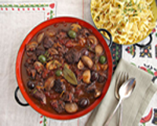

A selection of Chloé recipe
These recipes have been selected by our chefs and represents a selection of the best traditional French cuisine that are easy to make and packed with great flavors.

Provençal Lamb Daube with Red Wine, Olives and Oranges
Ingredients:
Ingredients:
- 3 pound boneless lamb shoulder cut into 2-inch pieces
- pinch sea salt nad ground black pepper
- 3 tablespoon olive oil, 1 tablespoon of butter
- 1 medium yellow onion and 3 medium carrot, cut in large dice
- 3 tablespoon olive oil, 1 tablespoon of butter
- 1 tablespoon tomato paste, 1 tablespoon brown sugar, 2 tablespoon all-purpose flour
- 2 cup red wine, 1 cup chicken stock
- Zest, pulp and juice of 1 orange (reserve some zest for garnish)
- 1 bouqet garni-2 bay leaves, 2 sprigs thyme, 1 sprig rosemary, 6 juniper berries, 1 tsp dried peppercorns & pinch of dried lavender buds tied with cheesecloth
- 2 potatoes, large dice, ½ cup pitted green olives or mixture of pitted Niçoise and green olives
- 2 sprigs flat leaf parsley, 1 sprig rosemary, 1 sprig thyme, finely chopped for garnish, extra orange zest for garni
Preparation:
Season lamb with sea salt and ground pepper. Heat olive oil and butter in a Dutch oven on high heat. Sear lamb, in batches, until brown and caramelized. Remove from pan and set aside.
To the hot pan, add the onion and carrots and cook over medium-high heat until they have caramelized. Add the garlic and cook for approximately 1 minute. Stir in the tomato paste, brown sugar and flour and cook for approximately 2-3 minute. Add the wine, chicken stock and orange zest, orange pulp and juice while scraping bottom of pan to lift the brown bits to incorporate into the daube.
Add the lamb back into the pot and bring the mixture to a boil. Cover the pot and reduce stove to a very low heat and simmer for approximately 1 ½ hours. Check and stir every 30 minutes. Skim fat off of the surface as needed. Once the lamb in fork tender, add the potatoes and olives and cook for 15 minutes more or until the potatoes are cooked through. Season to taste with additional sea salt & fresh ground pepper. Garnish with chopped fresh herbs and reserved orange zest.
To the hot pan, add the onion and carrots and cook over medium-high heat until they have caramelized. Add the garlic and cook for approximately 1 minute. Stir in the tomato paste, brown sugar and flour and cook for approximately 2-3 minute. Add the wine, chicken stock and orange zest, orange pulp and juice while scraping bottom of pan to lift the brown bits to incorporate into the daube.
Add the lamb back into the pot and bring the mixture to a boil. Cover the pot and reduce stove to a very low heat and simmer for approximately 1 ½ hours. Check and stir every 30 minutes. Skim fat off of the surface as needed. Once the lamb in fork tender, add the potatoes and olives and cook for 15 minutes more or until the potatoes are cooked through. Season to taste with additional sea salt & fresh ground pepper. Garnish with chopped fresh herbs and reserved orange zest.